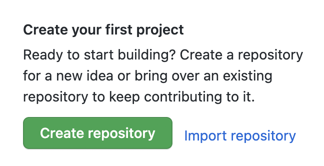

Projekt erstellen
Account erstellen
Um eine Webseite auf Github zu publizieren brauchen sie einen Account. Den können sie hier erstellen: github.com/signup Sie brauchen dazu eine gültige Email-Adresse.Neues Projekt
Melden sie sich bei Github an und klicken sie auf "Create Repository"

Der Name den sie dem Repository geben, muss die Form username.github.io haben,
wobei username dem Benutzernamen entspricht, den sie gewählt haben.
Sie müssen die Option Public anwählen.